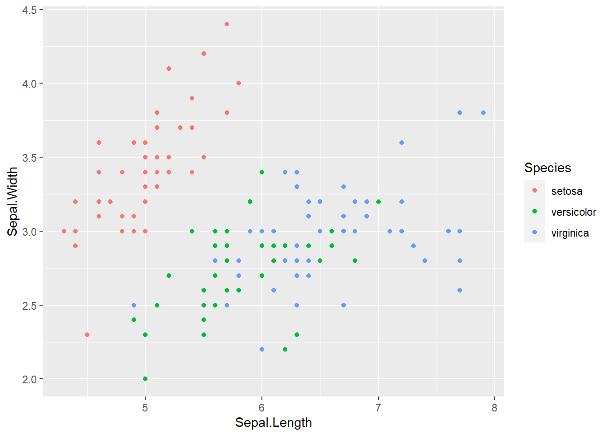
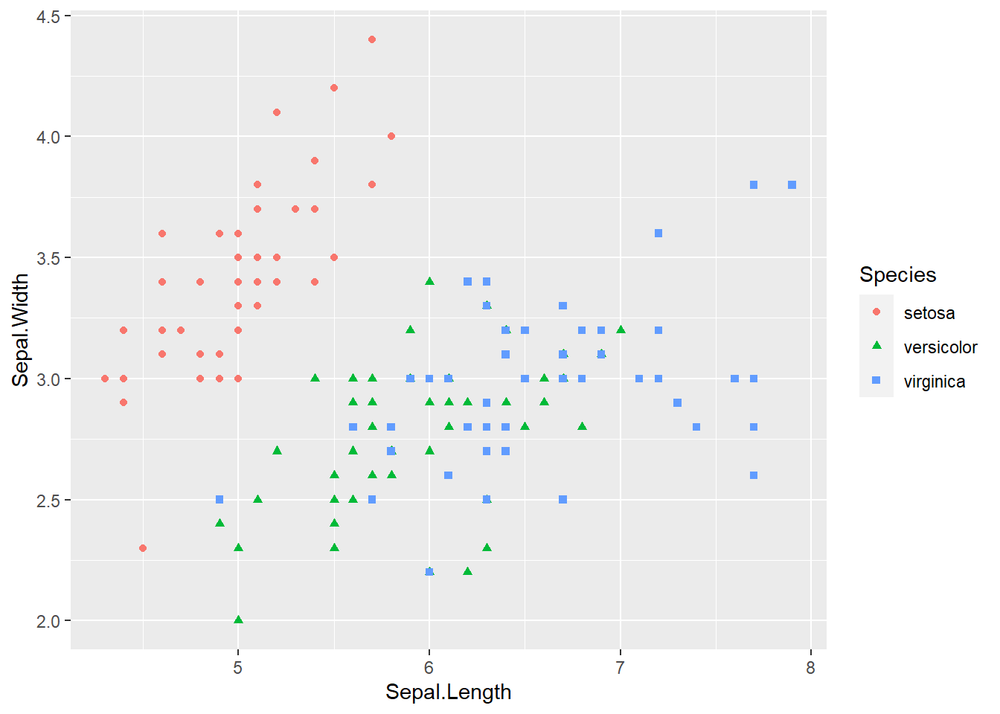

Chapter 7 Creación de gráficos
Antes de empezar a graficar es importante que todas nuestras variables tengan su correcta definición de clase (Si no recuerdan/saben que es esto visiten el capítulo 3.3.2). No todas las variables se pueden graficar de la misma manera y R necesita saber de que se trata
En esta sección vamos a abordar herramientas para la creación de gráficos en dos secciones:
Gráficos del paquete básico de R: sencillos, rápidos, muy limitados. Sirven para “ver” que estamos haciendo y por donde va la cosa
Gráficos del paquete ggplot2: más complicados pero de altísima calidad. Flexibles (se puede hacer casi cualquier cosa), llevan tiempo. Sirven para crear el gráfico final para publicar
7.1 Gráficos base de R
Como decíamos antes, estos gráficos nos permiten estudiar los datos sobre la marcha, carecen de sofisticación, pero no están pensados para ellos. La idea es que podamos explorar nuestra estadística de una forma sencilla (gráficos que probablemente no van a ir a otro lado que nuestra computadora) mientras trabajamos.
Vamos a ver los más famosos, vamos a trabajar con los datos de gapminder y de iris así que carguemoslos (sino lo hicimos antes ya)
library("gapminder")
data<-gapminder
flores<-irisAlgunas aclaraciones que son importantes:
El paquete base tiene una sintaxis muy simple, multilínea (quizas la unica multilíea de todo el lenguaje). esto quiere decir que si escribimos dos graficos en dos lineas consecutivas los pega (sin necesidad de un conector como el %>%)
R no tiene gráficos de tortas (básicamente porque no tienen una buena relación con la gente que hace estadística)
En la sintaxis simple de base, nuestra amiga la virgulilla significa en función de
7.1.1 plot()
La función plot es la más simple de todas, sirve para graficar la relación entre dos variables, lo usamos para generar gráficos de dispersión simples.
Por ejemplo:
plot(flores$Sepal.Length ~ flores$Sepal.Width)Como ven podemos escribir esto realmente en muy pocas palabras. En este caso al escribir flores\(Sepal.Length ~ flores\)Sepal.Width le indicamos Length en función de Width, y por eso lo puso en la y. Porque en los gráficos cartesianos y es función de x
Siempre podemos ajustar algunos parámetros de esta función para hacer “más lindo” al gráfico. Veamos algunas en un simple ejemplo.
Veamos algunos ajustes:
El parametro main: para poner el título
Los parámetros xlab e ylab: permiten cambiar los títulos de los ejes
pch sirve para seleccionar el tipo de símbolo de punto
plot(flores$Sepal.Length ~ flores$Sepal.Width, main="Ratio Sepal/Length", xlab="Width", ylab="Length", pch="*")Veamos algunos parámetros más:
El parámetro cex: permite cambiar el tamaño del punto
El parametro col: permite crear una paleta
Una variable entre corchetes después de col permite asignarle los colores a las variable
plot(flores$Sepal.Length ~ flores$Sepal.Width, main="Ratio Sepal/Length", xlab="Width", ylab="Length", pch="*", cex=2,col=c("blue", "green", "red")[flores$Species])Aclaración: si bien se puede “tunear” estos gráficos, no conviene. Es un proceso engorroso con malos resultados. Tenemos otro paquete para producir gráficos “para publicar”. Estos gráficos no estan pensados para ser lindos, sino rápidos. Si perdemos tiempo no sirve
7.1.2 Histograma y boxplot
Muchas de las características de los histogramas y los diagramas de caja las vimos en el capítulo anterior (en la sección de parametricidad), así que abordaremos esto en forma muy sencilla
hist(flores$Sepal.Width,
prob = TRUE)
lines(density(flores$Sepal.Width)) ##Acá vemos como funciona el multilínea En el caso de boxplot podemos graficar una sola variable (como vimos en el capítulo anterior)
En el caso de boxplot podemos graficar una sola variable (como vimos en el capítulo anterior)
boxplot(flores$Sepal.Width)
O dividirlo por una categórica en grupos
boxplot(flores$Sepal.Width~flores$Species)De nuevo aquí usamos la virguilla para pedirle que grafique en función de qué.
Estos gráficos son muy útiles para explorar por ejemplo la normalidad y seguir trabajando
7.2 Ggplot2
Este paquete es uno de los más utilizados de R. Uno de los aspectos más remarcables es que este paquete plantea una sintaxis particular que es reproducida por muchos otros paquetes.
Hay dos grandes sistemas de sintaxis que son muy útiles de aprender, la sintaxis dplyr para manipular variables y la sintaxis ggplot para hacer gráficos
Veamos en que consiste esta sintaxis ggplot
7.2.1 Sintaxis ggplot
La sintaxis ggplot se resume en 4 aspectos escenciales:
Una estructura de mapeo estético en donde le decimos a R, donde estan los datos y donde ponerlos (que va en el eje de las x, en el eje de las y, que variable es el color)
Una geometría que define el tipo de gráfico a utilizar
Múltiples funciones de ajustes para controlar titulos, paletas de colores, estilos de la grilla, etc.
Un sistema de capas, que permite superponer distintas geometrías en el orden que deseemos
Veamos como funciona en esta sintaxis de un boxplot
library(ggplot2)
ggplot(flores, aes(y=Sepal.Width, x=Species, fill=Species))+
geom_boxplot()Analicemos lo que escribimos con la idea mental de los componentes de la sintaxis:
En la primera línea nos encontramos con esto:
ggplot(flores, aes(y=Sepal.Width, x=Species, fill=Species))+
Esta estructura es el mapeo estético:
El primer argumento es de donde surgen los datos (el dataset)
El segundo argumento es la estética, aquí: 1) Asignamos la variable a y 2) Asignamos la variable a x 3) y asignamos la variable al color
esta línea debe terminar con un +, esto le dice a R que hay una línea siguiente (una capa más)
La segunda línea es:
geom_boxplot()
que asigna que geometría le vamos a pedir
7.2.1.1 Recapitulemos
Vimos que para crear un boxplor en R básico debo escribir esto:
boxplot(Sepal.Width ~ Species)
y para hacerlo en ggplot:
_ggplot(flores, aes(y=Sepal.Width, x=Species, fill=Species))+ geom_boxplot()
¿Qué sentido tiene utilizar una función más compleja para obtener el mismo gráfico? La respuesta corta es niguno. La respuesta larga es otra pregunta: ¿para qué queremos el gráfico?. Si queremos un gráfico para ver como son los datos, no es ggplot lo que necesitamos. En las secciones que siguen vamos a ver como ggplot nos sirve para crear “el gráfico” para publicar.
7.2.2 El mapeo estético
El mapeo estético como habíamos visto en la sección anterior es asignar una variable a una característica visual del gráfico, las posibilidades:
asignar un valor a la posicion en el eje x o en el y
asignar una variable al color (color)
asignar una variable al relleno de geometrías sólidas (fill)
asignar una variable a un tipo de forma (shape)
asignar una variable a un tamaño (size)
Importante
El mapeo estético necesita que todas nuestras variables tengan su correcta definición de clase Esta es la principal fuente de error en los gráficos ggplot
Veamos algunos ejemplos de mapeos esteticos en un gráfico de dispersión
ggplot(flores, aes(x=Sepal.Length, y=Sepal.Width, color=Species))+
geom_point()
Dentro del mapeo entonces: 1) asignamos el largo a la “x” 2) el ancho a las “y” y 3) la especie al color
ggplot(flores, aes(x=Sepal.Length, y=Sepal.Width, shape=Species))+
geom_point()Dentro del mapeo entonces: 1) asignamos el largo a la “x” 2) el ancho a las “y” y 3) la especie al tipo de forma de punto.
Incluso podemos asignar varios atributos esteticos a la misma variable, como aquí:
ggplot(flores, aes(x=Sepal.Length, y=Sepal.Width, color=Species, shape=Species))+
geom_point()
En este caso : 1) asignamos el largo a la “x” 2) el ancho a las “y” 3) la especie al tipo de forma de punto y 4) el color a la especie
Veamos que pasa si en lugar de una variable categórica como atributo del color ponemos una continua
ggplot(flores, aes(x=Sepal.Length, y=Sepal.Width, color=Petal.Width))+
geom_point()En este caso, asignamos una variable que R sabe es una continua a un color. Al graficar una continua R sabe que los valores no son bloques independientes entre sí (como en una paleta de colores) sino que hay infinitos valores entre uno y otro. para graficar este suceso recurre a mostrar una graduación de un sólo color, un proceso que se conoce como escalar la variable (porque la puso en una escala de azules). Para que ocurra esto es muy, muy, muy importante que las variables tengan asignada la clase que les corresponde.
Veamos que pasa si le “pifeamos” en eso:
flores$Petal.Width<-as.factor(flores$Petal.Width) # esta linea es para definir mal el tipo de variable (un error, a propósito)
ggplot(flores, aes(x=Sepal.Length, y=Sepal.Width, color=Petal.Width))+
geom_point()flores$Petal.Width<-as.numeric(flores$Petal.Width) # para reparar el error y seguir trabajandoCreamos un desastre en donde asigno un color independiente a cada valor que adoptó la variable (esto puede llevar a crear miles de colores así que mucho cuidado)
7.2.3 Las geometrías
Después de la definición de las variables a sus condiciones (la que llamamos anteriormente mapeo estético) debemos indicarle el tipo de gráfico que queremos que sea creado, estos gráficos se denominan geometrías y son básicamente los siguientes:
geom_point() produce un gráfico de dispersión o scatter plot
geom_boxplot() produce un gráfico de caja y bigotes (o _box-p) para resumir la distribución de un conjunto de puntos.
geom_histogram() y geom_freqpoly() sirven àra crear gráficos de frecuencia e histogramas, resumen la distribución de variables continuas.
geom_bar() crea gráficos de barra utilizadps para resumir la distribución de las variables categóricas.
geom_path() y geom_line() dibujan líneas entre los puntos de datos. Un gráfico de líneas está limitado a producir líneas que van de izquierda a derecha, mientras que los caminos ( geom_path) pueden ir en cualquier dirección. Las líneas se utilizan normalmente para explorar cómo cambian las cosas con el tiempo.
geom_smooth(): ajusta una línea a los datos y muestra tanto el ajuste como su error estándar (en términos de un intervalo de confianza).
7.2.4 Capas
Una de las cosas más interesantes con respecto a ggplot es que es posible apilar geometrías e incluso modificar la estética de cada una, veamoslo con un ejemplo:
Vamos a crear un gráfico de dispersión como el anterior
ggplot(flores, aes(x=Sepal.Length, y=Sepal.Width))+
geom_point()
Imaginemos que queremos producir una línea que implique un ajuste “lineal” a estos datos, deberíamos apilar otra geometría
ggplot(flores, aes(x=Sepal.Length, y=Sepal.Width))+
geom_point()+
geom_smooth(method = "lm") #este parámetro es para que el método de ajuste sea lineal## `geom_smooth()` using formula 'y ~ x' Veamos ahora dos gráficos y sus diferencias:
Veamos ahora dos gráficos y sus diferencias:
El primero:
ggplot(flores, aes(x=Sepal.Length, y=Sepal.Width, color=Species))+
geom_point()+
geom_smooth(method = "lm") #este parámetro es para que el método de ajuste sea lineal## `geom_smooth()` using formula 'y ~ x'El segundo:
ggplot(flores, aes(x=Sepal.Length, y=Sepal.Width))+
geom_point(aes(color=Species))+
geom_smooth(method = "lm") #este parámetro es para que el método de ajuste sea lineal## `geom_smooth()` using formula 'y ~ x'¿Por qué son diferentes?:
Prestemos mucha atención al mapeo estético, en el primero: el color está asignado junto con la estética global del gráfico (en la primera línea), mientras que en el segundo el mapeo estético está como un argumento de geom_point afectando sólo a esa capa.
Algunos conceptos importantes con respecto al trabajo de capas:
El mapeo estético puede afectar a una o más capas depende en donde decidamos incorporarlo
El orden de las líneas determina el orden en que se superponen, miremos estos dos gráficos:
ggplot(flores, aes(y=Sepal.Width, x=Species, fill=Species))+
geom_boxplot()+
geom_point()ggplot(flores, aes(y=Sepal.Width, x=Species, fill=Species))+
geom_point()+
geom_boxplot()Un gráfico cubre al otro en el sentido en que las capas se superponen, tener siempre en cuenta esto a la hora de graficar.
7.3 Ejercicios:
Para estos ejercicios vamos a trabajar con otro dataset “ChickWeight”, incluído en un paquete que se llama “datasets”.
“ChickWeight” es una base de datos con 578 registros sobre el efecto de 4 tipos de dietas distintas (la variable “Diet”) sobre el peso (“weigth”) de pollitos de distintas edades, reportadas en días (la variable “Time”)
Nuestro ejercicio consiste en:
Instalar el paquete “datasets” (si no lo han hecho ya)
Activar el paquete
Asignar la base de datos “cars” al objeto data
Y realizar los siguientes gráficos:
Un gráfico rápido mostrando el peso de los pollitos en función de su edad
Un gráfico de cajas con el peso de los pollitos por dietas (rápido o no, ustedes deciden)
Un gráfico de dispersión con el peso y la edad de los pollitos, coloreados por dieta
Un gráfico de dispersión con el peso y la edad de los pollitos, coloreados por dieta, con una línea de ajuste lineal por cada dieta
Un gráfico de dispersión con el peso y la edad de los pollitos, coloreados por dieta, con una línea de ajuste lineal para todos los pollitos en común
A trabajar
7.4 Respuestas:
Si son tan vagos de haber llegado a está sección sin hacer por su propia mano los ejercicios, acá están las respuestas pero recuerden “NO PAIN NO GAIN”
# los puntos 1 a 3
library(datasets)
data<-ChickWeight
# Un gráfico rápido mostrando el peso de los pollitos en función de su edad
plot(data$weight~data$Time)# Un gráfico de cajas con el peso de los pollitos por dietas (yo decidí un ggplot porque estoy obsesionado con el pero quizás un gráfico rápido hubiera sido mejor)
library(ggplot2)
ggplot(data, aes(X=Diet, y=weight))+
geom_boxplot()# Un gráfico de dispersión con el peso y la edad de los pollitos, coloreados por dieta
ggplot(data, aes(x=Time, y=weight, color=Diet))+
geom_point()# Un gráfico de dispersión con el peso y la edad de los pollitos, coloreados por dieta, con una línea de ajuste lineal por cada dieta
ggplot(data, aes(x=Time, y=weight, color=Diet))+
geom_point()+
geom_smooth(method="lm")## `geom_smooth()` using formula 'y ~ x'# Un gráfico de dispersión con el peso y la edad de los pollitos, coloreados por dieta, con una línea de ajuste lineal para todos los pollitos en común
ggplot(data, aes(x=Time, y=weight))+
geom_point(aes(color=Diet))+
geom_smooth(method="lm")## `geom_smooth()` using formula 'y ~ x'¿Qué piensan, son las dietas efectivas para subir el peso de los pollitos?, o los pollitos suben de peso sólo por crecer.
Bueno tranquilos que hay que “testear” estas hipótesis… y vamos a hacerlas en los próximos capítulos